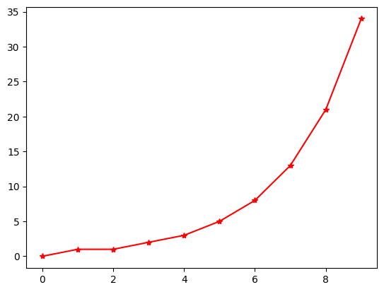

Magic commands#
Podemos listar los comandos disponibles con:
%lsmagic
Available line magics:
%alias %alias_magic %autoawait %autocall %automagic %autosave %bookmark %cat %cd %clear %code_wrap %colors %conda %config %connect_info %cp %debug %dhist %dirs %doctest_mode %ed %edit %env %gui %hist %history %killbgscripts %ldir %less %lf %lk %ll %load %load_ext %loadpy %logoff %logon %logstart %logstate %logstop %ls %lsmagic %lx %macro %magic %mamba %man %matplotlib %micromamba %mkdir %more %mv %notebook %page %pastebin %pdb %pdef %pdoc %pfile %pinfo %pinfo2 %pip %popd %pprint %precision %prun %psearch %psource %pushd %pwd %pycat %pylab %qtconsole %quickref %recall %rehashx %reload_ext %rep %rerun %reset %reset_selective %rm %rmdir %run %save %sc %set_env %store %sx %system %tb %time %timeit %unalias %unload_ext %who %who_ls %whos %xdel %xmode
Available cell magics:
%%! %%HTML %%SVG %%bash %%capture %%code_wrap %%debug %%file %%html %%javascript %%js %%latex %%markdown %%perl %%prun %%pypy %%python %%python2 %%python3 %%ruby %%script %%sh %%svg %%sx %%system %%time %%timeit %%writefile
Automagic is ON, % prefix IS NOT needed for line magics.
Algunos comandos son interactivos:
%quickref
Y podemos cargar la ayuda de un comando añadiendo ? al final de su nombre
%macro?
%env
{'SELENIUM_JAR_PATH': '/usr/share/java/selenium-server.jar',
'CONDA': '/usr/share/miniconda',
'GITHUB_WORKSPACE': '/home/runner/work/taller-python-tools/taller-python-tools',
'JAVA_HOME_11_X64': '/usr/lib/jvm/temurin-11-jdk-amd64',
'PKG_CONFIG_PATH': '/opt/hostedtoolcache/Python/3.11.9/x64/lib/pkgconfig',
'GITHUB_PATH': '/home/runner/work/_temp/_runner_file_commands/add_path_30d8b27b-689b-4e66-97e1-e789a8b5b7a6',
'GITHUB_ACTION': '__run_2',
'JAVA_HOME': '/usr/lib/jvm/temurin-11-jdk-amd64',
'GITHUB_RUN_NUMBER': '27',
'RUNNER_NAME': 'GitHub Actions 5',
'GRADLE_HOME': '/usr/share/gradle-8.10',
'GITHUB_REPOSITORY_OWNER_ID': '890104',
'ACTIONS_RUNNER_ACTION_ARCHIVE_CACHE': '/opt/actionarchivecache',
'XDG_CONFIG_HOME': '/home/runner/.config',
'Python_ROOT_DIR': '/opt/hostedtoolcache/Python/3.11.9/x64',
'DOTNET_SKIP_FIRST_TIME_EXPERIENCE': '1',
'ANT_HOME': '/usr/share/ant',
'JAVA_HOME_8_X64': '/usr/lib/jvm/temurin-8-jdk-amd64',
'GITHUB_TRIGGERING_ACTOR': 'sergiopasra',
'pythonLocation': '/opt/hostedtoolcache/Python/3.11.9/x64',
'GITHUB_REF_TYPE': 'branch',
'HOMEBREW_CLEANUP_PERIODIC_FULL_DAYS': '3650',
'ANDROID_NDK': '/usr/local/lib/android/sdk/ndk/27.1.12297006',
'BOOTSTRAP_HASKELL_NONINTERACTIVE': '1',
'PWD': '/home/runner/work/taller-python-tools/taller-python-tools',
'PIPX_BIN_DIR': '/opt/pipx_bin',
'STATS_TRP': 'true',
'GOROOT_1_20_X64': '/opt/hostedtoolcache/go/1.20.14/x64',
'GITHUB_REPOSITORY_ID': '334481971',
'DEPLOYMENT_BASEPATH': '/opt/runner',
'GITHUB_ACTIONS': 'true',
'STATS_VMD': 'true',
'ANDROID_NDK_LATEST_HOME': '/usr/local/lib/android/sdk/ndk/27.1.12297006',
'SYSTEMD_EXEC_PID': '592',
'GITHUB_SHA': 'e784ec1244b028a2325f949cf278d45ff0fe9291',
'GITHUB_WORKFLOW_REF': 'sergiopasra/taller-python-tools/.github/workflows/main.yml@refs/heads/main',
'POWERSHELL_DISTRIBUTION_CHANNEL': 'GitHub-Actions-ubuntu22',
'RUNNER_ENVIRONMENT': 'github-hosted',
'STATS_EXTP': 'https://provjobdsettingscdn.blob.core.windows.net/settings/provjobdsettings-0.5.181+6/provjobd.data',
'DOTNET_MULTILEVEL_LOOKUP': '0',
'GITHUB_REF': 'refs/heads/main',
'RUNNER_OS': 'Linux',
'GITHUB_REF_PROTECTED': 'false',
'HOME': '/home/runner',
'GITHUB_API_URL': 'https://api.github.com',
'LANG': 'C.UTF-8',
'RUNNER_TRACKING_ID': 'github_9d5544f6-0e65-4ec8-aa43-8bbb89456901',
'RUNNER_ARCH': 'X64',
'GOROOT_1_21_X64': '/opt/hostedtoolcache/go/1.21.13/x64',
'RUNNER_TEMP': '/home/runner/work/_temp',
'GITHUB_STATE': '/home/runner/work/_temp/_runner_file_commands/save_state_30d8b27b-689b-4e66-97e1-e789a8b5b7a6',
'EDGEWEBDRIVER': '/usr/local/share/edge_driver',
'JAVA_HOME_21_X64': '/usr/lib/jvm/temurin-21-jdk-amd64',
'GITHUB_ENV': '/home/runner/work/_temp/_runner_file_commands/set_env_30d8b27b-689b-4e66-97e1-e789a8b5b7a6',
'GITHUB_EVENT_PATH': '/home/runner/work/_temp/_github_workflow/event.json',
'INVOCATION_ID': '951e22d3c452438d8e21b31b9ef65eaf',
'STATS_D': 'true',
'GITHUB_EVENT_NAME': 'push',
'GITHUB_RUN_ID': '10828534519',
'JAVA_HOME_17_X64': '/usr/lib/jvm/temurin-17-jdk-amd64',
'ANDROID_NDK_HOME': '/usr/local/lib/android/sdk/ndk/27.1.12297006',
'GITHUB_STEP_SUMMARY': '/home/runner/work/_temp/_runner_file_commands/step_summary_30d8b27b-689b-4e66-97e1-e789a8b5b7a6',
'HOMEBREW_NO_AUTO_UPDATE': '1',
'GITHUB_ACTOR': 'sergiopasra',
'NVM_DIR': '/home/runner/.nvm',
'SGX_AESM_ADDR': '1',
'GITHUB_RUN_ATTEMPT': '1',
'STATS_RDCL': 'true',
'ANDROID_HOME': '/usr/local/lib/android/sdk',
'GITHUB_GRAPHQL_URL': 'https://api.github.com/graphql',
'RUNNER_USER': 'runner',
'ACCEPT_EULA': 'Y',
'STATS_UE': 'true',
'USER': 'runner',
'GITHUB_SERVER_URL': 'https://github.com',
'STATS_V3PS': 'true',
'PIPX_HOME': '/opt/pipx',
'GECKOWEBDRIVER': '/usr/local/share/gecko_driver',
'STATS_EXT': 'true',
'CHROMEWEBDRIVER': '/usr/local/share/chromedriver-linux64',
'SHLVL': '1',
'ANDROID_SDK_ROOT': '/usr/local/lib/android/sdk',
'VCPKG_INSTALLATION_ROOT': '/usr/local/share/vcpkg',
'GITHUB_ACTOR_ID': '890104',
'RUNNER_TOOL_CACHE': '/opt/hostedtoolcache',
'ImageVersion': '20240908.1.0',
'Python3_ROOT_DIR': '/opt/hostedtoolcache/Python/3.11.9/x64',
'DOTNET_NOLOGO': '1',
'GITHUB_WORKFLOW_SHA': 'e784ec1244b028a2325f949cf278d45ff0fe9291',
'GITHUB_REF_NAME': 'main',
'GITHUB_JOB': 'deploy-book',
'LD_LIBRARY_PATH': '/opt/hostedtoolcache/Python/3.11.9/x64/lib',
'XDG_RUNTIME_DIR': '/run/user/1001',
'AZURE_EXTENSION_DIR': '/opt/az/azcliextensions',
'PERFLOG_LOCATION_SETTING': 'RUNNER_PERFLOG',
'STATS_VMFE': 'true',
'GITHUB_REPOSITORY': 'sergiopasra/taller-python-tools',
'Python2_ROOT_DIR': '/opt/hostedtoolcache/Python/3.11.9/x64',
'CHROME_BIN': '/usr/bin/google-chrome',
'ANDROID_NDK_ROOT': '/usr/local/lib/android/sdk/ndk/27.1.12297006',
'GOROOT_1_22_X64': '/opt/hostedtoolcache/go/1.22.7/x64',
'GITHUB_RETENTION_DAYS': '90',
'JOURNAL_STREAM': '8:19874',
'RUNNER_WORKSPACE': '/home/runner/work/taller-python-tools',
'LEIN_HOME': '/usr/local/lib/lein',
'LEIN_JAR': '/usr/local/lib/lein/self-installs/leiningen-2.11.2-standalone.jar',
'GITHUB_ACTION_REPOSITORY': '',
'PATH': '/opt/hostedtoolcache/Python/3.11.9/x64/bin:/opt/hostedtoolcache/Python/3.11.9/x64:/snap/bin:/home/runner/.local/bin:/opt/pipx_bin:/home/runner/.cargo/bin:/home/runner/.config/composer/vendor/bin:/usr/local/.ghcup/bin:/home/runner/.dotnet/tools:/usr/local/sbin:/usr/local/bin:/usr/sbin:/usr/bin:/sbin:/bin:/usr/games:/usr/local/games:/snap/bin',
'RUNNER_PERFLOG': '/home/runner/perflog',
'GITHUB_BASE_REF': '',
'GHCUP_INSTALL_BASE_PREFIX': '/usr/local',
'CI': 'true',
'SWIFT_PATH': '/usr/share/swift/usr/bin',
'ImageOS': 'ubuntu22',
'STATS_D_D': 'true',
'GITHUB_REPOSITORY_OWNER': 'sergiopasra',
'GITHUB_HEAD_REF': '',
'GITHUB_ACTION_REF': '',
'GITHUB_WORKFLOW': 'deploy-book',
'DEBIAN_FRONTEND': 'noninteractive',
'GITHUB_OUTPUT': '/home/runner/work/_temp/_runner_file_commands/set_output_30d8b27b-689b-4e66-97e1-e789a8b5b7a6',
'AGENT_TOOLSDIRECTORY': '/opt/hostedtoolcache',
'_': '/opt/hostedtoolcache/Python/3.11.9/x64/bin/jupyter-book',
'JPY_PARENT_PID': '1795',
'PYDEVD_USE_FRAME_EVAL': 'NO',
'TERM': 'xterm-color',
'CLICOLOR': '1',
'FORCE_COLOR': '1',
'CLICOLOR_FORCE': '1',
'PAGER': 'cat',
'GIT_PAGER': 'cat',
'MPLBACKEND': 'module://matplotlib_inline.backend_inline'}
%run permite ejecutar otros cuadernos. Las variables pasan a estar definidas dentro del cuaderno presente
%run Fibonacci.ipynb

fib
<function __main__.fib(n: int)>
Podemos ver funciones y variables definidas con %who y %whos
%who
fib fibs ns plt
%whos
Variable Type Data/Info
--------------------------------
fib function <function fib at 0x7f930c541b20>
fibs list n=10
ns range range(0, 10)
plt module <module 'matplotlib.pyplo<...>es/matplotlib/pyplot.py'>
Vamos a usar %timeit para comparar la velocidad de ejecución de la versión simple de fib con la fórmula de Binet
import math
SQRT5 = math.sqrt(5)
PHI = (1 + SQRT5) / 2
def fibbn(n):
"""Fibonacci number, Binet's formula"""
return round((PHI**n - (1-PHI)**n)/SQRT5)
%timeit fibbn(20)
249 ns ± 0.575 ns per loop (mean ± std. dev. of 7 runs, 1,000,000 loops each)
%timeit fib(20)
1.17 ms ± 15.6 μs per loop (mean ± std. dev. of 7 runs, 1,000 loops each)
Podemos llamar a comandos del sistema y alamacenar los resultados en variables
files = !ls
print(files)
['Fibonacci.ipynb', 'Magics.ipynb', 'SNIa_medidas.csv', 'cfibonacci.ipynb', 'ide.md', 'jconvert.md', 'jremote.md', 'jupyter.md', 'magicmd.ipynb', 'magics.md', 'prac_estat.ipynb', 'python.md', 'sec2.md', 'widgets.md']
%sx ls
['Fibonacci.ipynb',
'Magics.ipynb',
'SNIa_medidas.csv',
'cfibonacci.ipynb',
'ide.md',
'jconvert.md',
'jremote.md',
'jupyter.md',
'magicmd.ipynb',
'magics.md',
'prac_estat.ipynb',
'python.md',
'sec2.md',
'widgets.md']
%%bash
for nm in *.md; do
echo $nm
done
ide.md
jconvert.md
jremote.md
jupyter.md
magics.md
python.md
sec2.md
widgets.md
Algunos paquetes proporcionan comandos mágicos adicionales.
Instalamos Cython para poder escribir directamente cython en las celdas y rpy2 para escribir R.
rpy2 permite además comunicar datos entre Python y R.
%pip install Cython
# %conda install Cython
Requirement already satisfied: Cython in /opt/hostedtoolcache/Python/3.11.9/x64/lib/python3.11/site-packages (3.0.11)
Note: you may need to restart the kernel to use updated packages.
# Cargando un "cell magic" proporcionado por Cython
%load_ext Cython
%%cython
import math
cdef double SQRT5 = math.sqrt(5)
cdef double PHI = (1 + SQRT5) / 2
def fibcy(int n):
cdef int res
res = round((PHI**n - (1-PHI)**n)/SQRT5)
return res
%timeit fibcy(20)
139 ns ± 1.16 ns per loop (mean ± std. dev. of 7 runs, 10,000,000 loops each)